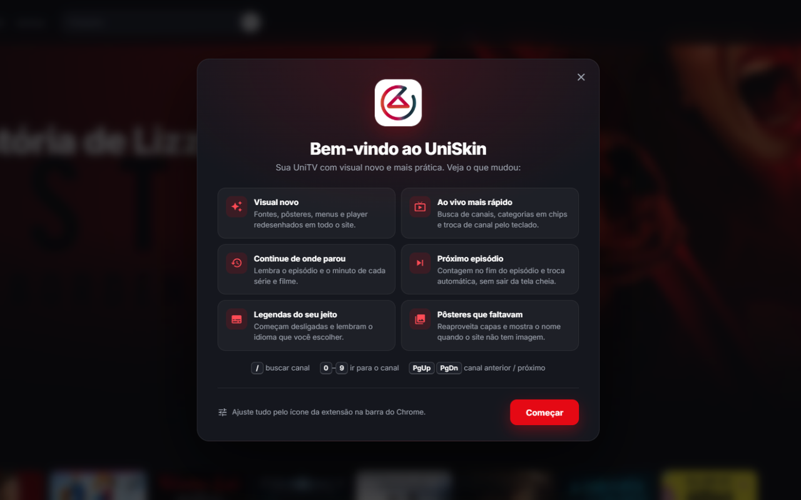

UniSkin
Um visual novo e mais prático para a UniTV Web: tema escuro moderno, continuar de onde parou e próximo episódio automático.
Extensão para Google Chrome · tema não oficial
O que a extensão faz
- Visual novoFontes, pôsteres, menus e player redesenhados em todo o site.
- Continue de onde parouLembra o episódio e o minuto de cada série e filme, mesmo depois de recarregar.
- Próximo episódioContagem no fim do episódio e troca automática, sem sair da tela cheia.
- Ao vivo mais rápidoBusca de canais, categorias em botões e troca de canal pelo teclado.
- Legendas do seu jeitoComeçam desligadas e lembram o idioma que você escolher.
- Pôsteres que faltavamMostra uma capa com o nome quando o site não tem imagem.
Privacidade
O UniSkin não coleta nem envia nenhum dado. Preferências e progresso ficam salvos só no seu navegador. Leia a política de privacidade.